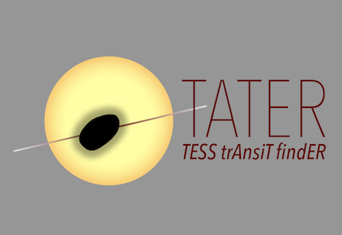

Multiplanet systems are highly valuable for studying the physics governing planet formation and evolution, but many of the multiplanet systems discovered prior to the TESS mission orbit stars too faint for detailed follow-up observations. With recent TESS observations of relatively bright stars known to host at least one planet, we can discover new transiting planets and expand the sample of long-period planets by detecting single-transit events. This is an important step in building up a robust sample of multiplanet systems that can be used to test theories of planet formation and migration. Additionally, as value-added, searching for multi-planet systems with TESS will enable us to discover new exoplanets that are especially compelling targets for detailed follow-up and atmospheric characterization.
Figure 1. The TATER logo. To search for new exoplanets in multi-planet systems, I have developed the software package "TATER" (the Tess trAnsiT findER; Figure 1), to analyze time-series photometry from TESS Cycle 3. The code implements well-established transit search algorithms (e.g., BLS and TLS), as well as vetting routines, to identify new planets candidates and compute planetary and system parameters using Bayesian inference. We will present the full capabilities of TATER and the results from our multiplanet system search in an upcoming paper. We will also assess TATER's transit search completeness with transit injection and recovery tests, and from our catalog of newly detected planets, we will identify promising targets for atmospheric characterization.